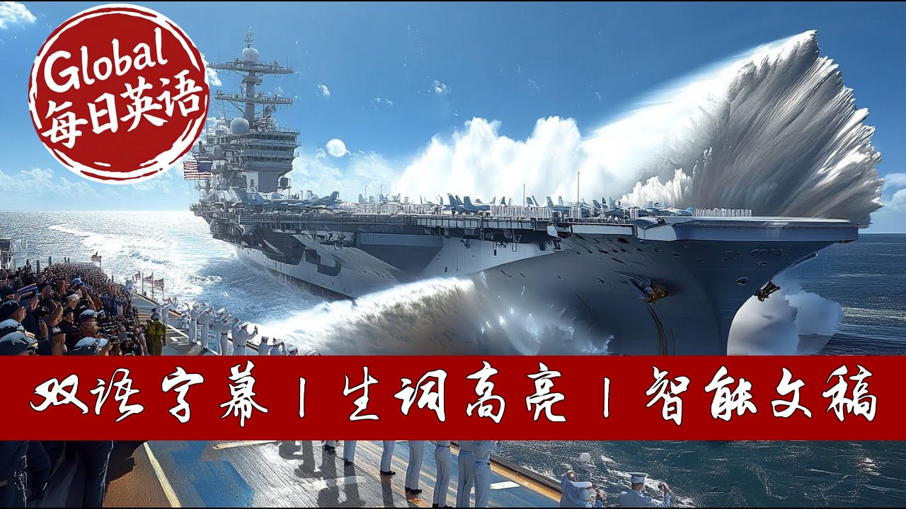

【【生词双高亮】美国海军最强战力：10万吨级福特级航母下水全过程】
Summary: USS John F. Kennedy Launch: A Marvel of Modern Engineering
摘要： 2019年10月，美国第二艘福特级航母"肯尼迪"号在纽波特纽斯造船厂完成历史性下水。这座耗资130亿美元的钢铁堡垒通过精密控制的注水过程，在容纳1亿加仑水的干船坞中实现首次浮起。该航母采用革命性电磁弹射系统，可搭载90架舰载机，代表着美国海军工程技术的最高成就。

⏱️ Estimated Reading Time: 26 min.
📚 四级生词 📚 六级生词 📚 雅思生词 📚 托福生词 📚 专八生词 📚 SAT生词 📚 考研生词 📚 GRE生词
A massive steel fortress weighing 100,000 tons sits motionless in a concrete canyon surrounded by towering walls.
Then, with the push of a button, 100 million gallons of water rush in like a controlled tsunami.
Within hours, this colossal warship, longer than three football fields, rises from its concrete cradle and floats for the very first time.
This isn't science fiction.
This is how America's most powerful naval weapons come to life.
The USS John F. Kennedy, our nation's second Ford class super carrier, experienced this exact moment in October 2019.
After 4 years of construction, this 13 billion Guardian of Freedom finally touched water.
But the process that gets these floating cities from dry land to open ocean is far more complex and fascinating than most people realize.
Today, we're taking you inside the incredible engineering marvel that is aircraft carrier launching.
From the massive dry docks of Newport News ship building to the revolutionary electromagnetic systems that catapult fighter jets into the sky, you'll discover why America's carrier fleet remains the most feared and respected naval force on Earth.
If you're proud of our Navy's incredible achievements, type proud in the comments below.
The birthplace of giants.
Deep in Virginia along the James River sits a facility that has been building America's floating fortresses for over a century.
Newport News ship building isn't just any shipyard.
It's the only place in America capable of building nuclearpowered aircraft carriers.
The heart of this operation lies in massive concrete structures called graving docks.
These aren't ordinary construction sites.
Dryd do 12, where the USS John F. Kennedy was born, stretches over 2,000 ft long and 250 ft wide.
To put this in perspective, you could park nearly 500 school buses end to end in this space.
But here's what makes this even more remarkable.
These carriers aren't built like regular ships.
While most vessels are constructed in pieces and assembled, aircraft carriers are built from the keel up as one continuous structure.
Every pipe, every cable, every room is carefully planned and installed while the ship sits on massive concrete blocks called keel blocks.
These keel blocks are engineering marvels themselves.
Made of concrete and topped with wood caps, they support the entire weight of the carrier during construction.
The USS John F. Kennedy, weighing as much as 800 fully loaded Boeing 747s, rested on these blocks for four solid years, while thousands of skilled workers brought her to life.
More than 3,200 ship builders and 2,000 suppliers from across our great nation contributed to Kennedy's construction.
From the steel workers who shaped her hull to the electronic specialists who installed her radar systems, this represents American craftsmanship at its finest.
The controlled flood.
October 29th, 2019 marked a historic day not just for the Navy, but for everyone who believes in American maritime superiority.
On this crisp autumn morning, shipyard workers prepared to witness something truly spectacular.
The first flooding of dry dock 12 with the Kennedy inside.
But this isn't simply opening a valve and letting water rush in.
The flooding process is a carefully orchestrated ballet of engineering precision that unfolds over several days.
Every step is monitored, measured, and controlled to ensure the safety of both the ship and the workers.
The process begins with flooding the dock to about 10 ft high, just enough to reach the keel blocks.
At this stage, engineers conduct critical tests to ensure everything is working perfectly.
The water doesn't just flow in randomly.
It's directed through specific channels and measured to the inch.
As the water level rises, something magical happens.
This massive steel structure, which has sat motionless for years, begins to feel the gentle embrace of buoyancy.
The laws of physics that keep every ship afloat start to take effect even while the carrier remains supported by its keel blocks.
Mike Butler, the program director for Kennedy, described this moment perfectly.
The flooding of the dry dock is truly a historic event in the construction of the ship and a special moment for the men and women who have worked to get the ship to the point.
What makes this achievement even more impressive is that Kennedy reached this milestone 3 months ahead of schedule.
This speaks volumes about the dedication and skill of American ship builders who work tirelessly to strengthen our nation's defense capabilities.
When the dock reaches full capacity, over 100 million gallons of water, the Kennedy experiences true flotation for the first time.
The massive carrier, no longer dependent on its concrete supports, floats freely within the confines of the dry dock.
The moment of truth.
The transition from supported structure to floating vessel represents one of the most critical moments in carrier construction.
Once fully afloat, the Kennedy must be carefully maneuvered to the west end of the dry dock, where she'll undergo additional testing before her official christening.
This movement requires incredible precision.
Tugboats, positioning systems, and experienced pilots work together to guide this floating city with millimeter accuracy.
There's no room for error when you're moving a vessel worth more than the GDP of some small countries.
The christening ceremony itself carries deep tradition and meaning.
On December 7th, 2019, Pearl Harbor Day, Caroline Kennedy performed the time-honored ritual of breaking a champagne bottle against the ship's bow.
This wasn't just ceremony.
It was Caroline Kennedy recreating the exact same moment she performed 52 years earlier when the first USS John F. Kennedy was christened.
Following christening, the real adventure begins.
The Kennedy undocks into the James River, where she begins her journey toward becoming a fully operational guardian of American interests, but she's far from ready for combat.
Months of additional outfitting, testing, and crew training lie ahead.
This process showcases the incredible patience and precision required to build these floating fortresses.
Unlike commercial ships that might be rushed to market, military vessels undergo exhaustive testing to ensure they can perform their mission when our nation's security depends on it.
The movement from dry dock to river represents more than just a change of location.
It symbolizes the transformation from construction project to naval vessel, from static structure to dynamic weapon system capable of projecting American power anywhere in the world.
Revolutionary technology While the launch process itself is impressive, what makes modern Ford class carriers truly extraordinary lies in their revolutionary technology.
These ships represent the biggest leap forward in carrier design since the introduction of nuclear power.
The crown jewel of this technological revolution is the electromagnetic aircraft launch system known as EMAs.
For decades, carriers used steam catapults to launch aircraft.
A system that worked but had limitations.
Emails changes everything.
Instead of using steam pressure, emails employs electromagnetic force through linear induction motors.
This isn't just a minor upgrade.
It's a complete reimagining of how aircraft launches work.
The system provides smoother
Acceleration, putting less stress on both aircraft and pilots.
This means our brave aviators experience less physical strain and our expensive aircraft last longer.
But Emails offers even more advantages.
It can launch everything from lightweight drones to heavy strike fighters with equal precision.
The system recharges faster than steam catapults, allowing for higher sorty rates when our forces need maximum striking power.
The numbers tell the story.
Fordclass carriers can generate 25% more sordies than their predecessors while requiring 25% fewer crew members.
This efficiency translates directly into combat effectiveness and cost savings for taxpayers.
However, this cuttingedge technology hasn't come without challenges.
Early testing revealed reliability issues with the system achieving only 600 cycles between failures instead of the desired 4,000.
But this is exactly why extensive testing exists, to identify and fix problems before our sailors depend on these systems in combat.
The Navy's commitment to getting this right demonstrates the professional excellence that defines our military.
Rather than rushing flawed systems into service, they continue testing and improving until emails meets the high standards our forces deserve.
Recent reports show significant progress.
The USS Gerald R. Ford has successfully completed over 22,900 aircraft launches and recoveries, proving that American engineering and determination can overcome any challenge.
Human dedication behind the technology.
Behind every technological marvel stands the human element that makes it all possible.
The men and women who build these carriers represent the best of American craftsmanship and dedication.
Consider the scope of what these workers accomplish.
Over 3,200 ship builders contribute directly to each carrier's construction, supported by 2,000 suppliers from across the country.
This network represents communities from coast to coast, all contributing to our nation's defense.
These aren't just jobs, their generational callings.
Many shipyard families have worked at Newport News for decades, passing down skills and pride from parent to child.
This continuity ensures that the knowledge and expertise required to build these complex vessels never disappears.
The challenges these workers face would overwhelm most people.
They work with nuclear reactors, advanced electronics, precision machinery, and weapon systems that represent the cutting edge of military technology.
Every weld, every installation, every test must meet exacting standards because lives depend on their work.
What makes this even more impressive is the timeline pressure.
While the Kennedy faced some delays, now expected to deliver in March 2027 instead of the original 2025 target.
These delays often result from the Navy's commitment to excellence rather than construction problems.
Supply chain challenges, workforce shortages, and the complexity of incorporating lessons learned from the first Fordass carrier all contribute to extended timelines.
But these challenges also demonstrate the Navy's refusal to compromise on quality.
The dedication shows in the details.
When workers discovered ways to improve Kennedy's construction by incorporating lessons from the Gerald R. Ford, they didn't hesitate to implement changes, even if it meant longer construction times.
This commitment to continuous improvement ensures each carrier surpasses its predecessor.
The pride these workers take in their craft is evident in every aspect of construction.
They understand they're not just building ships.
They're creating the platforms that will carry our brave sailors and aviators into harm's way to defend freedom around the world.
Global impact and deterrence.
The moment an aircraft carrier slides into the water, it begins reshaping global military calculations.
These floating cities don't just project American power, they provide reassurance to allies and pause to potential adversaries worldwide.
Recent events demonstrate this impact perfectly.
When tensions escalated in the eastern Mediterranean following the Hamas attack on Israel, the USS Gerald R. Ford carrier strike group deployed within hours.
This rapid response capability exists only because of the massive infrastructure investment required to build, launch, and maintain these vessels.
The deterrent effect cannot be overstated.
A single Ford class carrier carries more firepower than many entire national air forces.
With up to 90 aircraft, including F-35C Lightning 2 stealth fighters, these ships can project power hundreds of miles inland while remaining safely positioned in international waters.
But carriers don't operate alone.
Each one travels with a strike group, including cruisers, destroyers, and submarines.
This combined force represents overwhelming military capability that few nations can match and none want to challenge directly.
The economic impact extends far beyond military considerations.
The carrier construction program supports hundreds of thousands of jobs across America.
From the steel mills that provide raw materials to the high- techch companies that build sophisticated electronics, this program strengthens our entire industrial base.
International partners recognize this capability.
The French Navy has contracted for emails and advanced arresting gear systems for their next generation carrier, acknowledging American technological superiority in this critical area.
The Navy's current plan calls for maintaining an 11 carrier fleet, ensuring multiple carriers remain available for deployment while others undergo maintenance or training.
This sustained presence around the world provides the flexibility our nation needs to respond to crises anywhere, anytime.
Critics sometimes question the cost of these vessels.
But consider the alternative.
Without carrierbased power projection, America would need massive overseas bases, enormous transport aircraft fleets, and forward deployed ground forces.
Carriers provide flexibility and capability that no other military system can match.
The future of American naval power.
Looking ahead, the carrier construction program represents America's long-term commitment to maintaining naval superiority.
With plans for 10 Ford class carriers total, this program will extend well into the 2050s and beyond.
The USS Enterprise CVN80 and USS Doris Miller CVN81 are already under construction, incorporating lessons learned from both Gerald R. Ford and John F. Kennedy.
Each successive carrier benefits from improved construction techniques, updated technology, and refined processes.
Perhaps most significantly, these carriers are designed with growth potential built in.
Only half of their electrical generation capacity is currently utilized, leaving enormous room for future technologies.
Whether that's directed energy weapons, advanced radar systems, or technologies we haven't yet invented, Ford class carriers can adapt and evolve.
The naming of CBN81 as USS Doris Miller holds special significance.
Miller, an African-American sailor who heroically manned anti-aircraft guns during the Pearl Harbor attack, represents the courage and diversity that strengthens our military.
This carrier will be the first named for an African-American and the first named for an enlisted sailor.
Recent announcements reveal that CVN82 and CVN83 will honor Presidents Bill Clinton and George W. Bush.
Respectively, continuing the tradition of naming these magnificent vessels for American leaders who understood the importance of strong naval forces.
Supply chain improvements and lessons learned continue reducing construction times and costs.
The two ship procurement strategy for Enterprise and Doris Miller has already generated significant savings while maintaining quality standards.
Conclusion.
From that first moment when 100 million gallons of water rush into the dry dock to the day these floating fortresses deploy worldwide, the process of launching aircraft carriers represents American ingenuity, craftsmanship, and commitment to freedom at its finest.
These ships carry more than aircraft and weapons.
They carry the hopes and prayers of a grateful nation.
Every time one of these magnificent vessels slides into the water, it sends a clear message to the world.
America remains committed to defending liberty and supporting our allies wherever they may be.
The men and women who build, launch, and operate these carriers deserve our deepest respect and gratitude.
Their dedication ensures that America's naval forces remain the most capable and respected in the world.
The next time you see footage of an aircraft carrier at sea, remember the incredible journey that brought her there.
From the first steel cut to that magical moment when she first touched water, ready to serve our nation with pride and distinction.
Thanks for joining us on this incredible journey behind the scenes of American naval power.
If this video gave you a new appreciation for our Navy's capabilities, hit that like button and subscribe for more content celebrating the men and women who keep America safe.
Until next time,
stay proud of the greatest Navy in the